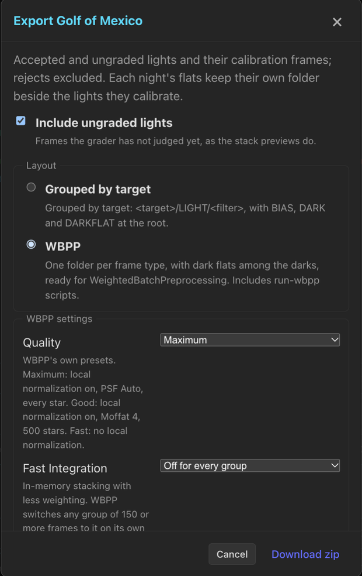
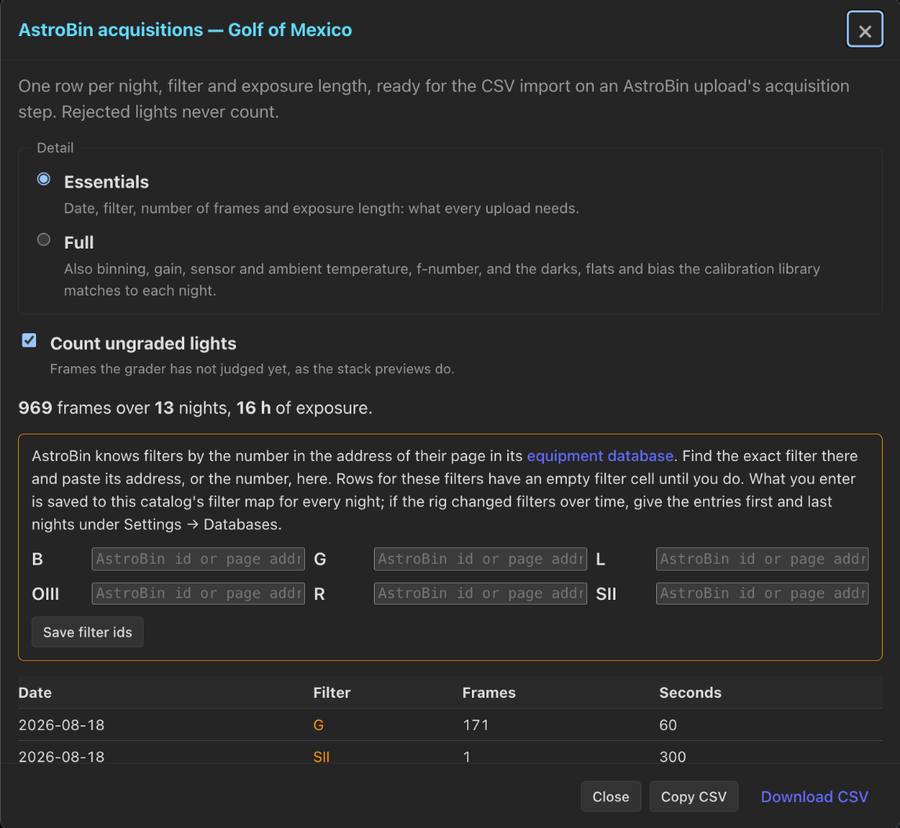
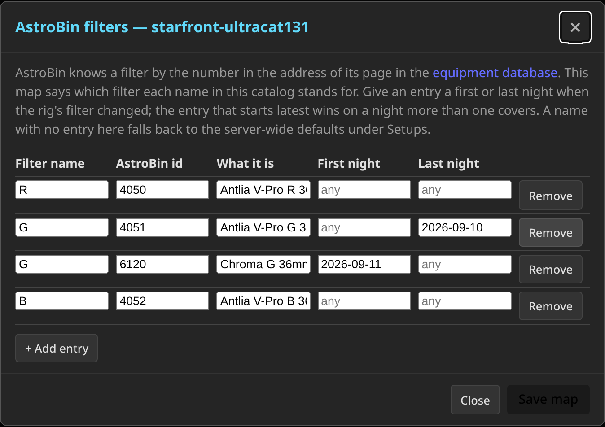

Export & AstroBin
Gather reviewed lights and their matched calibration frames into a folder tree for another stacker, without moving or changing your source files. Write the acquisition CSV that AstroBin's upload page imports.
Choose a tree grouped by target, or a PixInsight WBPP tree with its runner script.
Where to export
| Where | Result |
|---|---|
| Desktop app | A folder you choose. Hard links on the same drive, copies elsewhere. |
| Browser | A zip download, or a background export on the server when the database has a server export directory. |
| CLI | A folder: copies, hard links, clones, symbolic links, or a WBPP runner that names the frames where they are. |
| HTTP API | A zip stream, a folder on the server, or a background export into the server export directory. |
What goes in
| Grade | Exported |
|---|---|
| Accepted | Always, scoped by project, target or filter. |
| Pending | When Include ungraded lights is ticked, which it is by default in the dialog. The CLI and API add them with --include-pending or include_pending. |
| Rejected | Never. |
Export reads grades and file names from the catalog and finds the files under its image folders. It never changes grades, edits files or moves anything out of the source library.
Export from the Library
- Finish grading the frames you want to stack.
- In the Library, open the project's full card. Click Export on the project for all its targets, or on one target's row.
- In the dialog, choose whether to include ungraded lights, the Layout, the WBPP settings for a WBPP tree, and how the Files land.
- Click Choose folder… in the desktop app, Download zip in a browser, or Start export when the database has a server export directory.


Export appears when the project or target has at least one accepted frame and PSF Guard found its files. Settings → Setups → Export sets the Default layout and WBPP settings each dialog starts from. They are server-wide and shared by the desktop app and browsers.
How the files land:
| Files | What it does |
|---|---|
| Copy | The export stands on its own. The desktop app hard-links on the same drive; a server export clones where the filesystem allows. Both copy otherwise. |
| Link to the originals | Symbolic links, so the tree takes no space and can point at a network mount. Whatever reads it must see the originals at the same paths. |
| Reference in place | Copies nothing. Writes only the WBPP runner, which names every frame where it is. WBPP layout only. |
| Zip of the frames | Browser download: every frame, plus the runner scripts for a WBPP tree. |
| Scripts only | Browser download: a small zip of the runner scripts, naming each frame where it sits on the server. WBPP layout only. |
With Reference in place, Server path is the
folder the frame list is relative to, filled with what the database's image
folders share. PixInsight path is the same folder on the
PixInsight machine, if it differs. Server path
/mnt/barium/astrobin and PixInsight path P:\ list
the frames as P:/_ByTelescope/…. A frame outside the server path
keeps its full path.
Desktop app
The desktop app writes into the chosen folder. It tries a hard link first, which is instant and takes no extra space on the same filesystem, and copies when it cannot link. A summary counts linked, copied, already present, missing and failed files.
Browser
Without a server export directory, the browser streams an uncompressed zip. Image data does not compress well, so store mode saves CPU and the download starts at once.
Server export directory
For a NAS or headless server, set an absolute Server export
directory under Settings → Databases → Edit,
or export_dir in the registry entry. Export then
starts a background job that writes a subfolder for the project or target
and shows its progress.
Layouts
Grouped by target is the default and suits Siril and manual processing:
destination/
├── BIAS/
├── DARK/300s_G100/
├── DARKFLAT/2s_G100/
└── California Nebula/
├── FLAT/HA/SESSION_2026-08-18/
└── LIGHT/HA/Flats stay under the target whose lights chose them, in a folder per night: two targets, or two nights of one target, can need different flats for one filter, and merging them would build the wrong master. Folders are dated by the catalog's observing night, so dusk and dawn flats share one date.
WBPP uses the frame-type roots that PixInsight's WeightedBatchPreprocessing expects:
destination/
├── bias/G100/
├── darks/300s_G100/
├── flats/California Nebula/HA/SESSION_2026-08-18/
├── lights/California Nebula/HA/SESSION_2026-08-18/
├── run-wbpp.js
├── run-wbpp.sh
└── run-wbpp.cmdDark flats go in darks/, since WBPP pairs a dark to a flat by
exposure. Each light's path names the same night as its flats, and the runner
tells WBPP to group by SESSION, so each night's lights calibrate
with that night's flats while bias and darks serve every night.
Dark sets per night
A WBPP export builds the same dark masters a stack would. When lights of
one exposure and gain were matched to different darks, say each to its own
complete night, each set of darks goes in a
darks/300s_G100/DARKSET_<night>/ folder named for its
nearest dark, and each light's path names its set. The runner groups by
SESSION and DARKSET, so each set serves only its own
lights and WBPP no longer averages every night's darks into one master.
When the lights share one set, there is no DARKSET folder.
Both layouts keep each file's name. When two files would land at the same path, the later one gains a number instead of overwriting the first.
Run a WBPP export
A WBPP export carries three files:
run-wbpp.js, the PixInsight script. It holds the frames, the WBPP settings, and the per-group drizzle and Fast Integration choices WBPP has no command-line parameter for.run-wbpp.shandrun-wbpp.cmdstart PixInsight on that script, writing towbpp-outbeside it. SetPI_ROOTorPI_BINwhen PixInsight is not in the standard place.
By default the script loads the frames and stops at WBPP's dialog, so you
can check the groups and references before an hour of integration. Append
,run to PARAMS in the launcher to go straight
through. Anything else appended to PARAMS reaches WBPP. On a
Linux machine without a display, run xvfb-run -a ./run-wbpp.sh.
WBPP writes to its own console and logs, not the terminal. Masters land in
wbpp-out/master and calibrated frames in
wbpp-out/calibrated; read wbpp-out/logs/*.log for
the outcome. To run WBPP on the server from PSF Guard instead, see
WBPP Runs; the settings are explained there.
Export from the command line
# Preview the plan, then copy accepted lights and their calibration frames
psf-guard export my-db --dest ./stacking --dry-run
psf-guard export my-db --dest ./stacking
# A WBPP tree with its runner scripts
psf-guard export my-db --dest ./stacking --layout wbpp
# Only the runner, naming frames where they are, for PixInsight on P:\
psf-guard export my-db --dest ./wbpp-run --layout wbpp \
--placement reference --local-root /mnt/barium/astrobin --remote-root 'P:\'
# One target and filter; hard-link when possible
psf-guard export my-db --dest ./stacking \
--target "California Nebula" --filter HA --link
# A raw SQLite path needs its image folders
psf-guard export schedulerdb.sqlite --dest ./stacking \
--image-dirs /data/lights,/archive/lights| Option | Effect |
|---|---|
--project NAME | Project name, substring match |
--target NAME | Target name, substring match |
--filter NAME | One filter, exact match ignoring case |
--include-pending | Add Pending frames; Rejected still stay out |
--layout standard|wbpp | Grouped by target (default) or the WBPP tree with its runner |
--placement MODE | copy (default), hardlink, reflink, symlink, or reference (WBPP only) |
--link | Same as --placement hardlink: hard-link, else copy |
--local-root, --remote-root | For reference: the folder frames are listed below, as this machine and the PixInsight machine see it |
--wbpp-quality | maximum (default), good, fast |
--wbpp-fast-integration | off (default), auto, on |
--wbpp-drizzle | off (default), 2x, 3x |
--wbpp-autocrop | true or false; WBPP's default is on |
--wbpp-rejection | auto, winsorized-sigma, linear-fit, esd, rcr, percentile-clip |
--dry-run | Print the plan without writing files |
--image-dirs DIRS | Comma-separated image folders for a raw database path |
Export again after each session
- A file already at the destination with the expected size counts as present and is skipped.
- Newly accepted frames are added on the next run.
- Files that cannot be found are reported and do not stop the rest.
Write the AstroBin acquisition CSV
AstroBin's upload page takes a CSV of imaging sessions on its acquisition step. Click AstroBin next to Export on a project's full card or a target row in the Library. The dialog previews the rows, offers Copy CSV and Download CSV, and asks for the AstroBin id of any filter it does not know yet.

A row is one night, one filter and one exposure length. Nights split where the catalog's lights are never captured, as in Sky Coverage, so a session past midnight stays one row. Accepted lights always count, ungraded lights count unless you untick Count ungraded lights, and rejected lights never count.
| Detail | Columns |
|---|---|
| Essentials (default) | date, filter, number, duration. Reads only the catalog, so it is instant. |
| Full | Adds binning, gain, sensorCooling (mean sensor temperature), fNumber, the darks, flats, flatDarks and bias a stack would use for that night and filter, and temperature (mean focuser probe temperature). Rows also split by binning and gain. |
Full detail reads one light per night and filter from disk, header only.
Columns PSF Guard cannot know, such as bortle and
meanFwhm, are left out, and AstroBin treats them as blank.
Filter ids
AstroBin knows a filter by the number in its equipment page's address,
for example …/equipment/explorer/filter/4049/…, not by name. A
catalog's "G" says nothing about which G, so each catalog keeps its own
filter map under Settings → Databases → AstroBin
filters: the name as the catalog spells it, the AstroBin id, what
the filter is, and, when the rig's filter changed, the first and last night
the entry covers. Paste the filter's page address or the number alone. Each
saved id links back to its page.
The map lives in the catalog, so it travels with the rig's database, and editing it needs database management. Ids you enter in the export dialog are saved to this catalog's map with Save filter ids. Settings → Setups → AstroBin holds server-wide defaults by name for names no catalog entry covers. A filter with no id gets a blank cell, and the rest of the row still imports.

The CLI writes the same file:
psf-guard astrobin-csv my-db --target-id 12
psf-guard astrobin-csv my-db --project-id 3 --detail full --include-pending -o m31.csv
psf-guard astrobin-csv my-db --target-id 12 --filter-id L=4049 --filter-id Ha=4051my-db is a registry slug or a Target Scheduler database path.
--detail full needs the image folders, from the registry entry
or --image-dirs. On AstroBin, choose the CSV import on the
acquisition step and paste or upload the file. AstroBin drops a value it
cannot read without saying so, so check the rows in PSF Guard's preview
first.
HTTP API
# Stream one target and its calibration frames as a WBPP zip
curl "http://localhost:3000/api/db/my-db/export?target_id=42&layout=wbpp" \
--output psf-guard-export.zip
# Only the runner scripts, naming frames where they sit on the server
curl "http://localhost:3000/api/db/my-db/export?target_id=42&layout=wbpp&placement=reference" \
--output wbpp-scripts.zip
# Preview a folder export on the server's own filesystem
curl -X POST "http://localhost:3000/api/db/my-db/export/local" \
-H "Content-Type: application/json" \
-d '{"dest":"/data/stacking","project_id":7,"layout":"wbpp","dry_run":true}'
# Start and poll an export below the configured server directory
curl -X POST "http://localhost:3000/api/db/my-db/export/server" \
-H "Content-Type: application/json" \
-d '{"project_id":7,"layout":"wbpp","subdirectory":"project-7"}'
curl "http://localhost:3000/api/db/my-db/export/server"
# The AstroBin CSV for one target
curl "http://localhost:3000/api/db/my-db/astrobin-export.csv?target_id=42&detail=full" \
--output m31.csvThe zip route and the AstroBin route only read. The local route can write
anywhere on the server, so it needs --allow-database-management.
The server route writes only below the configured export_dir
and takes one subdirectory name.
All export routes take project_id, target_id,
include_pending, filter_name, layout
(standard or wbpp), placement,
local_root and remote_root. The zip route takes the
WBPP settings as wbpp_quality, wbpp_fast_integration,
wbpp_drizzle, wbpp_autocrop and
wbpp_rejection; the POST routes take them as a
wbpp object. The local route also takes dry_run.
Finish FITS and XISF in Photoshop
The separate FITS and XISF Photoshop plugins, built on Seiza's image codecs, open your stacks and masters in Photoshop. They import 32-bit float or rescaled 16-bit images, can debayer Bayer mosaics to RGB, and save at the document's 16- or 32-bit depth by default.
Download the latest release: a Windows x64 installer or manual plugin zip, or a signed and notarized universal macOS DMG. Close Photoshop first. On macOS, drag both plugin bundles onto the DMG's Photoshop Plug-ins shortcut, eject it, and restart Photoshop. Since 0.5.0 the Windows plugins and installer are signed by StackFoundry LLC. See the installation guide for each platform.
Set defaults in Help → About Plug-In → FITS/XISF on Windows or Photoshop → About Plug-In → FITS/XISF on macOS. Open asks how to import by default; Remember choice saves the answer. Save follows the document depth without asking.
Troubleshooting
| Symptom | Check |
|---|---|
| No Export action | The scope needs an Accepted frame, with its file found under the database's image folders. |
nothing to export | Check the project, target and filter scope, the grades, the image folders, and whether Pending frames should count. |
| Hard links became copies | Hard links need the source and destination on one filesystem that supports them. |
| Zip stops or will not open | A source file became unreadable during the stream. Check file access and download again. |
| Calibration frames missing | Open the project's coverage report. Only frames that safely match the lights are exported, and stray-light darks stay out. |
| Reference in place unavailable | Choose the WBPP layout first. |
| The runner reports frames it cannot find | The frames are not at the listed paths on the PixInsight machine. Check PixInsight path, or edit psfSourceRoot at the top of run-wbpp.js. |
| AstroBin shows no filter | Give the filter an id in the catalog's AstroBin filter map or the dialog. |